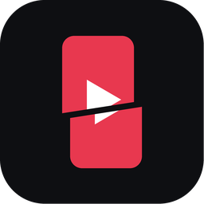

VideoKesitleriKullanım Koşulları
Son güncelleme: 7 Kasım 2026
- VideoKesitleri, kanal sahibi OoSee'nin kendi kullanımı için geliştirilmiş kişisel bir araçtır; herkese açık bir hizmet olarak sunulmaz.
- Uygulama YouTube API Hizmetlerini kullanır. Kullanım, YouTube Hizmet Şartları'na ve Google Gizlilik Politikası'na tabidir.
- Yüklenen içerikten ve YouTube kurallarına uygunluğundan kanal sahibi sorumludur.
- Uygulama "olduğu gibi" sunulur; kesintisiz ya da hatasız çalışacağı garanti edilmez.
- Verilerin nasıl işlendiği için: Gizlilik Politikası.
İletişim: GitHub Issues
Terms of Service
Last updated: November 7, 2026
- VideoKesitleri is a personal tool built for the channel owner OoSee's own use; it is not offered as a public service.
- The app uses YouTube API Services. Use is subject to the YouTube Terms of Service and the Google Privacy Policy.
- The channel owner is responsible for uploaded content and its compliance with YouTube's rules.
- The app is provided "as is", without any guarantee that it will work without interruption or errors.
- For how data is handled, see the Privacy Policy.
Contact: GitHub Issues